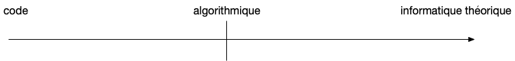

L'informatique en licence MPCI
L'informatique est une science "incarnée" : les modèles et théorèmes théoriques sont mis en œuvre (on dit implémenté) sur une machine physique appelée ordinateur au moyens de programmes (suites de 0 et de 1 interprétées par un processeur).
À ce titre elle va nécessiter des compétences et des connaissances variées (programmation, algorithmie, mathématique discrète, système, ...), que l'on pourrait séparer en un axe allant de la programmation à l'informatique théorique avec en son centre l'algorithmie faisant le lien entre ces deux extrêmes :

Cet axe code/théorie se retrouvera dans toutes les UEes de la licence :
- cours de L1 : axe 75% code / 25% informatique théorique
- cours de L2 : axe 50% code / 50% informatique théorique
- cours de L3 : axe 25% code / 75% informatique théorique
Un informaticien compétent doit avoir des compétences sur tout l'axe, une extrémité nourrissant l'autre.
Prérequis et méthode d'apprentissage
Il n'y a pas de prérequis à avoir avant d'assister aux cours d'informatique de la licence MPCI. Si vous avez fait NSI avant ce n'est pas un mal mais l'expérience prouve que ça ne donne pas d'avantage significatif.
Au départ l'informatique ressemble à ce que vous avez déjà vu au Lycée... Attention : ce n'est que de la ressemblance (c'est pareil pour les maths et la physique. En vrai, vous n'en avez encore jamais fait pour de vrai). Venez avec l'état d'esprit du débutant, travaillez régulièrement et n'hésitez pas à demander à vos professeurs si vous avez des questions et tout se passera bien.
On parle d'informatique mais en vérité il faudrait parler d'informatiques (comme les mathématiques) tant les compétences mobilisées sont diverses. La grande majorité des étudiants va avoir du mal avec une des parties (parfois le code, parfois l'algorithmie, parfois les démonstrations) : il faut la travailler. Le déclic de compréhension va se faire pour tout le monde, parfois il faut plus de temps que pour la majorité des autres étudiants mais c'est normal. Une technique d'apprentissage qui fonctionne est de ne pas aller trop vite et de respecter les principes du Shuhari : il faut comment par répéter avant d'adapter puis d'improviser. En algorithmie par exemple, il ne faut pas hésiter à apprendre par cœur les algorithmes classiques du cours (le code et la preuve), ce qui vous permettra de les adapter ensuite à des problèmes proches pour enfin pouvoir s'en détacher et d'en inventer des neufs pour résoudre des problèmes nouveaux (tout comme au primaire vous appreniez par cœur des comptines avant de faire vos premières compositions au collèges puis dissertations au Lycée).
Enfin, méfiez vous de l'effet Dunning-Kruger qui stipule que moins on en sait plus on croit en savoir (on sur-évalue ses connaissances réelles, souvent en L1), souvent suivi plus tard de la descente où on croit que l'on ne sait rien (syndrome de l'imposteur, souvent en L3) : les 2 impressions sont fausses.
À retenir
Travaillez régulièrement et sérieusement toutes les parties et si vous avez des questions il ne faut pas hésiter à demander à vos professeurs : ils sont là pour ça et sauront mieux vous conseiller qu'une IA.
UEes d'informatique de la licence MPCI
- Certaines fiches UEes ne sont pas encore à jour. Le descriptif détaillé et à jour est alors présenté ci-après.
Les enseignements d'informatique sont organisés en 3 paliers de connaissances/compétences :
- L1 : niveau novice. Bases d'informatique pour tout "honnête homme". À l'issue de cette année vous aurez assez de compétences pratiques pour coder un petit projet.
- L2 : niveau competent. Vous apprendrez une vaste gamme de méthodes pour vous permettre de résoudre un problème de complexité moyenne, proche d'un problème de référence. l'issue de cette année vous aurez assez d'expérience de programmation pour coder un projet sur la durée.
- L3 : niveau avancé. Vous pouvez créer vos propres algorithmes et résoudre des problèmes complexe. l'issue de cette année vous aurez des connaissances fines concernant les fondements théoriques de l'informatique.
Les parties communes doivent vous permettre de poursuivre en master ou en école d'ingénieur généraliste (ie. non spécialisée en informatique) et si vous avez suivi en plus les UEes spécialisées en informatique vous pourrez intégrer tous les master d'informatique et intégrer les école en majeure informatique, même les plus prestigieuses (si vous avez eu d'excellentes notes et appréciations à toutes les UEes).
L1
Les 4 UE de L1 sont des UEes de Tronc Commun. Elles ont pour but d'enseigner le lire-écrire-compter de l'informatique :
- concevoir un algorithme résolvant un problème simple,
- écrire un programme en python,
- compter le nombre d'opérations que va effectuer un algorithme avant de s'arrêter
Le langage de programmation utilisé est le python qui est un langage généraliste à la fois très algorithmique et tres facile d'utilisation. Il est le langage le plus utilisé dans le monde scientifique et académique ainsi qu'en entreprise pour gérer des projets de taille moyenne.
S1
Données, calcul en informatique (18h)
On y verra comment l'informatique représente ses données à partir d'une suite de 0 et de 1 :
- entiers,
- approximation de réels,
- caractères
Et comment elle les manipule en utilisant le calcul booléen.
Bases de programmation (36h)
On y verra les principe de programmation communs à tous les langages informatique (variable, tests et boucles) et comment créer des programmes python (itératifs et récursifs) à partir de ces briques élémentaires.
S2
Programmation objet (18h)
fiche UE pas à jour
Cette UE est consacrée à l'étude d'un projet informatique : de sa structure à son développement. Elle est séparé en deux partie, la première consacrée aux outils utilisés et la seconde au développement proprement dit.
Nous présenterons dans un premier temps les outils nécessaires au développement un projet informatique : un interpréteur python pour exécuter le code (installation en locale d'un interpréteur), l'intégration de fonctionnalités tierces qui dispense de tout recoder à chaque projet (utilisation du gestionnaire de modules pip) et un éditeur de code puissant (nous utiliserons vscode).
Pour garantir la pérennité d'un projet informatique dans le temps il faudra mettre en oeuvre des techniques permettant non seulement de vérifier expérimentalement la véracité des fonctions codées (avec des tests ciblés,dit unitaires) mais également de permettre ses modifications sans crainte de faire régresser le code (en faisant des tests une partie intégrante du projet).
Nous montrerons ensuite un style de programmation, la programmation objet, qui permet segmenter le code en unités fonctionnelles (les objets) interdépendantes. Ce type de programmation structurée permet de gérer u projet dans le temps et avec de nombreux développeurs. Il est est soutenu par des outils permettant :
- une représentation synthétique (diagramme UML) des différentes interactions dans le projet,
- de garantir au client que les fonctionnalités attendues sont bien codées via l'utilisation de user stories.
Algorithmie 1 (bases) (36h)
fiche UE pas à jour
Cette UE est consacrée à l'étude théorique des algorithmes.
On commencera par ce poser la question de ce qu'est un algorithme, de ce qu'il peut et (surtout) ne peut pas faire. Une fois ces questions métaphysiques abordées nous présenterons le langage des algorithmes, une façon non ambiguë de les décrire : le pseudo-code.
Nous nous attellerons ensuite à la production d'algorithme (itératif et récursif) permettant de résoudre des problèmes simples (il faudra démonter que notre algorithme résout bien le problème demandé) le plus rapidement possible (en estimant la complexité d'un algorithme, c'est à dire le nombre d'opérations qu'ils effectuent avant de s'arrêter).
Ces problématiques (écrire un algorithme résolvant le plus vite possible un problème donné) seront illustrés par deux problèmes fondamentaux (et très prisée des informaticiens) :
- le problème de l'exponentiation de deux entiers,
- le problème du tri d'une liste finie d'entiers.
Enfin, nous étudierons comment créer des structures de données, en particuliers celles utilisées par tout développeur python : les listes et les dictionnaires. Ces structures linéaires sont non seulement utiles en pratique mais permettent aussi d'aborder des notions (un peu) plus avancée en algorithmie comme les fonctions de hachage et la notion de complexité amortie.
L2
On entame une transition entre cours de Tronc Commun (S3) et premiers cours d'options (S4). On s'adresse à des étudiants voulant approfondir leurs connaissances en informatique. Les cours sont encore utiles à tous, mais pas indispensable pour ceux faisant un rejet de la matière.
S3
Bases de données et Data science (20h)
fiche UE pas à jour
Ce cours propose une initiation progressive aux bases de données relationnelles et à leur exploitation en contexte analytique. Il débute par une introduction à l’algèbre relationnelle, cadre théorique fondamental permettant de comprendre la logique des opérations sur les données. Les étudiants y découvrent les opérateurs essentiels et acquièrent les bases conceptuelles nécessaires pour formuler des requêtes de manière rigoureuse.
Cette approche formelle est mise en pratique avec l’apprentissage des requêtes SQL. Après une présentation des commandes fondamentales et des bonnes pratiques, les TD et TP permettent d’écrire et exécuter des requêtes sur des bases relationnelles simples. Un premier devoir surveillé vient renforcer l’acquisition conjointe de l’algèbre relationnelle et du SQL (requêtes). La progression se poursuit avec quelques principes guidant la création d’une base SQL et l’étude des contraintes d’intégrité, afin de faire comprendre le rôle crucial du schéma, de la modélisation et des règles de cohérence dans la qualité des données. Les étudiants découvrent ensuite un écosystème plus large autour de la donnée : l’utilisation conjointe de SQLite3 et de pandas en Python, puis une première exposition à SQLAlchemy, afin de relier les bases de données à un environnement de programmation courant en data science, favorisant la reproductibilité (CM, TD et TP).
Enfin, le cours s’ouvre sur une initiation aux perspectives d’analyse prédictive : statistiques descriptives d’un jeu de données tabulaire issu d’une base SQL, visualisations des données, mesures de corrélation/causalité, prétraitements, puis introduction à la classification avec scikit-learn, via l’algorithme des $k$-plus proches voisins dont la complexité sera étudiée, et illustrée sur une base de données réelles. Le cours se conclut par un TP évalué qui relie l’ensemble des compétences : partir d’une base relationnelle réelle, définir une tâche de prédiction, organiser les données pour la réaliser (via requêtes SQL), et mener une première démarche complète d’analyse prédictive de données.
Structure de données - arbres et graphes (30h)
La structure de donnée arborée permet de résoudre des problèmes algorithmique bien plus vite qu'avec une structure linéaire comme le tableau. C'est une structure fondamentale en informatique que tout le monde doit connaître.
Objectif : Étudier des structures de données arborées, fondamentales en algorithmique (dictionnaires, files de priorité) ainsi que des algorithmes classiques sur les graphes (plus courts chemins, arbres couvrants de poids minimal, flots maximaux).
L'UE est séparée en deux parties, la première consacrée aux structures arborées et la seconde à la recherche de chemins dans un graphe (plus court chemin, flot, ..)
Notions vues pour la partie "arbres" :
- arbres binaires, arbres d’arité quelconque
- arbres binaires de recherche, AVL-arbres
- files de priorité (tas binaires)
Notions vues pour la partie "graphes" :
- parcours
- plus courts chemins : Dijkstra, Bellman-Ford
- arbres couvrants de poids minimal
- flots maximaux
Le langage de programmation des divers application est le python,
S4
Langages, Automates, Grammaires (38h)
L'objectif de cette UE est de comprendre le formalisme de machine à état fini et les algorithmes reliés et les utiliser pour la modélisation. Comprendre et utiliser les formalismes d’expression régulières et de grammaires pour modéliser des langages. Comprendre l’utilisation de traduction d’un langage en un autre.
Algorithmie 2 (résolution de problèmes) (38h)
fiche UE pas à jour
Le langage d’application de cette UE sera le Go. Un langage moderne utilisé pour les gros projets informatique
Cette UE se propose de donner des méthodes de résolution de problèmes connus et des techniques pour les adapter à de nouveaux problèmes.
Dans le prolongement du cours de S3 sur les structures arborées en algorithmie, on commencera par étudier la structure de graphe. Outre son étude théorique on verra qu’elle est un outil puissant de modélisation permettant de résoudre de façon efficace une vaste gamme de problèmes concrets (on commence par modéliser notre problème sous la forme d'un problème de graphe connu, puis on utilise des algorithmes de résolution de celui-ci pour résoudre notre problème initial).
On verra cependant que certains problèmes de graphe (comme clique par exemple) sont compliquer à résoudre de façon efficace (ie. polynomialement) bien qu'ils soit facile de vérifier si une proposition de solution en est une réellement ou non. De façon plus étrange on exhibera des problèmes de graphes équivalents à clique mais de prime abort totalement différent (trouver le chemin le plus long dans un graphe par exemple).
Ceci nous amènera à étudier la structure même des problèmes solvable par un algorithme (on en déduira plusieurs classes de problèmes : P, NP, coNP, ...) ainsi qu'un problème central, le problème de la "satisfiabilité" (SAT). Ceci dégagera 3 classes de problèmes fondamentaux :
- la classe $P$ des problèmes solvables en temps polynomial,
- la classe $NP$ des problèmes dont on peut vérifier une solution potentielle en est une en en temps polynomial
- la classe des problèmes $NP$-complets représentés par le problème SAT
On renversera enfin cette classification en prenant le point de vue des algorithmes : sachant une famille donné d'algorithmes (algorithmes gloutons, diviser pour régner, programmation dynamique, ...), quels problèmes résoudre avec ? Cette étude pratique nous donnera une méthode puissante de résolution de problème : à partir du problème que l'on veut à résoudre on cherchera la famille d'algorithmes qui se prêterait le mieux à sa résolution (exacte ou approchée).
Le langage d'application de cette UE sera le go qui permet une gestion plus fine de la mémoire (avec un type spécial appelé pointeur) et des types que le python et est ainsi utilisé pour des projet informatiques important (et vraiment sympa à utiliser mais plus bas-niveau que python).
L3
Cours de spécialités. S'adresse à des gens aimant la matière et ayant suivi toutes le UEes précédentes.
S5
Intelligence Artificielle et Machine Learning (40h)
fiche UE pas à jour
Présentation générale du domaine (data science, apprentissage automatique, IA). On y verra en particulier les notions de :
- Classification
- Régression : régression linéaire, régularisation ridge et Lasso ; aspect computationnels
- Machine à vecteurs supports (SVM) : cas linéaire et à noyau
- Réseaux de neurones : problèmes et modélisation, rétro-propagation du gradient, modèles hybrides avec la physique
- Apprentissage non-supervisé : clustering, modèles de mélange
Ces notions seront abordées sous la forme de CM/TD/TP. Les TD permettent en particulier de développer les fondements théoriques et mathématiques, et les TP la mise en œuvre des algorithmes et leur utilisation sur des scenarios
Algorithmie 3 (avancé) (40h)
fiche UE pas à jour
Cette UE est consacré à l'étude d'algorithmes complexes (et jolis). Elle est composée de deux partie, la première consacrée au problèmes de graphes (problèmes de coloration, de planarité, de couplage/couverture, ...) et la seconde consacré aux algorithmes de résolution de problèmes classiques (calcul de la médiane en temps linéaire, programmation dynamique, ...).
S6
Calculabilité et Sémantique (36h)
fiche UE pas à jour
Objectif : comprendre la notion de calculabilité, la notion de problème décidables, indécidables et de réduction. Comprendre les notions de complexité en temps et en espace ainsi que les principales classes de complexité associées.
La théorie de la calculabilité cherche à caractériser la notion de « procédure effective » de manière formelle. Nous étudierons les limites de ce qui est ou non calculable, montrerons que cette notion est robuste (différentes variantes d’un modèle, différents modèles). Le modèle principalement considéré sera celui de machine de Turing par lequel seront définies les notions centrales de calculabilité, réduction, complexité.
Plus précisément nous étudierons :
- Machine de Turing : robustesse du modèle (équivalence déterministe/non-déterministe, multi-ruban, etc)
- Décider et calculer : langage récursif et récursivement énumérable, fonction calculable et semi-calculable.
- Propriétés de clôture des langages récursifs et récursivement énumérable
- Existence de fonctions non calculables par dénombrement (diagonale de Cantor)
- Problème de l'arrêt
- Réduction : many-one-réduction Turing
- Théorème de Rice
- Universalité et complétude
- Thèse de Church-Turing
- Modèles de calcul équivalents (λ-calcul, fonctions récursives, RAM, etc)
- Classes de complexité en temps/ en espace (P, NP, EXP, PSPACE, etc)
- Théorème de Savitch
- Réductions, problèmes difficiles, problèmes complets (SAT, QBF)
- Théorème de Cook
Logique (24h)
fiche UE pas à jour
Objectif : cette UE constitue une introduction à la théorie de la démonstration. En particulier, on introduire la notion de théorie et celle de modèle. On cherchera à savoir écrire des preuves dans un système formel, ainsi qu’à pouvoir raisonner sur ces preuves. Enfin, introduction aux assistants de preuves.
Notions abordées : (étant donné le faible volume horaire, certains résultats (en particulier pour la logique du premier ordre) ne seront pas démontrés dans le détail)
- Théorie :
- Langage, syntaxe, substitution.
- Système de déduction, prouvabilité
- Cohérence, extension conservative
- Modèle
- Interprétation sémantique, validité
- Complétude
- Logique propositionnelle :
- Déduction naturelle
- Logique classique, modèle booléens
- Logique intuitionniste, modèle de Kripke
- Calcul des séquents, éliminations des coupures
- Logique du premier ordre
- Quantificateurs, variables libres, variables liées
- Théorème de complétude
Des notions complémentaires abordées en TD/TP :
- SAT, algorithme pour SAT
- traduction négative de la logique classique dans la logique intuitionniste
- λ-calcul, types simples, correspondance de Curry-Howard
Enfin, l’assistant de preuve Coq sera utiliser pour écrire des preuves en TP.
Projets
- S2, S3 et S4 : deux projets d'informatique par semestre
- PPPE L2 : site de la MPCI. Approchez-vous des L2/L3 qui pourront vous renseigner
Stages possibles
Deux stages facultatifs en L1 et L2 (juin et/ou juillet) et un stage obligatoire en L3.
De nombreuses possibilités thématiques, demandes à vos prof !